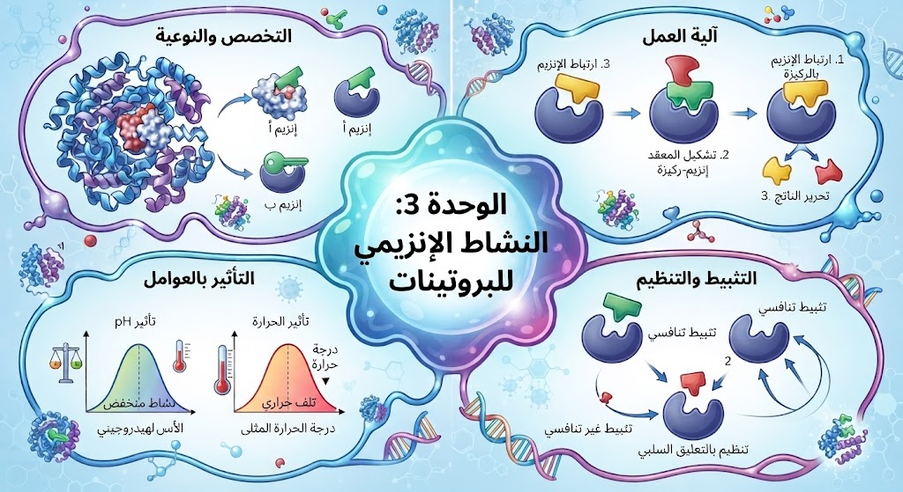

الوحدة 3: النشاط الإنزيمي للبروتينات
[ مساحة إعلانية علوية ]
01المفهوم الحديث عن الإنزيم كوسيط حيوي
الإنزيمات هي جزيئات بروتينية متخصصة تعمل كعوامل مساعدة، حيث تساهم في تسريع التفاعلات الكيميائية داخل الخلية بشكل كبير دون أن تتغير أو تُستهلك بنهاية التفاعل.
• دور الإنزيم: يقوم الإنزيم بخفض طاقة التنشيط اللازمة لحدوث التفاعل، مما يتيح للعمليات الحيوية أن تتم في ظروف عادية ومناسبة تحافظ على سلامة الخلية.
• دور الإنزيم: يقوم الإنزيم بخفض طاقة التنشيط اللازمة لحدوث التفاعل، مما يتيح للعمليات الحيوية أن تتم في ظروف عادية ومناسبة تحافظ على سلامة الخلية.
02 النوعية المزدوجة تجاه الركيزة ونوع التفاعل
يتميز الإنزيم بتخصص عالٍ ودقيق، حيث يُظهر نوعية مزدوجة تضمن انتظام التفاعلات داخل الخلية:
• نوعية تجاه مادة التفاعل: لا يرتبط الإنزيم إلا بـ مادة التفاعل (الركيزة) التي تتوافق بنيوياً مع الموقع الفعال الخاص به.
• نوعية تجاه نوع التفاعل: يقتصر دور الإنزيم على تحفيز نمط واحد محدد من التفاعلات الكيميائية لنفس مادة التفاعل دون غيره.
• نوعية تجاه مادة التفاعل: لا يرتبط الإنزيم إلا بـ مادة التفاعل (الركيزة) التي تتوافق بنيوياً مع الموقع الفعال الخاص به.
• نوعية تجاه نوع التفاعل: يقتصر دور الإنزيم على تحفيز نمط واحد محدد من التفاعلات الكيميائية لنفس مادة التفاعل دون غيره.
03 التشريح الجزيئي للموقع الفعال (Active Site)
يُعرّف الموقع الفعال بأنه منطقة محدودة من الإنزيم تتكون من عدد قليل من الأحماض الأمينية ذات وضعية فراغية دقيقة، وتكون هذه الأحماض متباعدة في السلسلة الببتيدية لكنها تتقارب فراغياً بفضل انثناءات البروتين.
ينقسم الموقع الفعال وظيفياً إلى جزأين أساسيين:
• منطقة التثبيت: تضمن تموضع الركيزة بدقة داخل الموقع الفعال.
• منطقة التحفيز: تحتوي على المجموعات الكيميائية المسؤولة عن تفاعل وتحويل الركيزة إلى ناتج.
ينقسم الموقع الفعال وظيفياً إلى جزأين أساسيين:
• منطقة التثبيت: تضمن تموضع الركيزة بدقة داخل الموقع الفعال.
• منطقة التحفيز: تحتوي على المجموعات الكيميائية المسؤولة عن تفاعل وتحويل الركيزة إلى ناتج.

04 آليتا التكامل البنيوي (المباشر والمحفز)
يعتمد عمل الإنزيم على نوعين أساسيين من التكامل البنيوي لضمان دقة الارتباط والتحفيز:
• التكامل المباشر: يتوافق فيه شكل الموقع الفعال مع شكل الركيزة توافقاً ثابتاً ومسبقاً وفق نموذج "القفل والمفتاح".
• التكامل المحفز: يتميز فيه الموقع الفعال بالمرونة، حيث يتغير شكله بشكل طفيف ومستحث عند اقتراب الركيزة منه (معظم الإنزيمات تتبع هذه الآلية)، مما يضمن تقارب المجموعات الكيميائية الفعالة لتحفيز التفاعل بكفاءة عالية.
• التكامل المباشر: يتوافق فيه شكل الموقع الفعال مع شكل الركيزة توافقاً ثابتاً ومسبقاً وفق نموذج "القفل والمفتاح".
• التكامل المحفز: يتميز فيه الموقع الفعال بالمرونة، حيث يتغير شكله بشكل طفيف ومستحث عند اقتراب الركيزة منه (معظم الإنزيمات تتبع هذه الآلية)، مما يضمن تقارب المجموعات الكيميائية الفعالة لتحفيز التفاعل بكفاءة عالية.
05 مراحل التفاعل الإنزيمي وتشكل المعقد (ES)
يمر التفاعل الإنزيمي بثلاث مراحل أساسية:
• مرحلة الارتباط: تبدأ بتشكل روابط انتقالية ضعيفة بين الموقع الفعال والركيزة لينتج المعقد ES.
• مرحلة التحويل الكيميائي: يتم خلالها تحويل الركيزة إلى ناتج داخل تجويف الإنزيم.
• مرحلة التحرير: يفقد الناتج P تكامله البنيوي مع الموقع الفعال فتتفكك الروابط الضعيفة ويتنحى الناتج مستعيداً الإنزيم بنيته الأصلية للدخول في تفاعل جديد.
• مرحلة الارتباط: تبدأ بتشكل روابط انتقالية ضعيفة بين الموقع الفعال والركيزة لينتج المعقد ES.
• مرحلة التحويل الكيميائي: يتم خلالها تحويل الركيزة إلى ناتج داخل تجويف الإنزيم.
• مرحلة التحرير: يفقد الناتج P تكامله البنيوي مع الموقع الفعال فتتفكك الروابط الضعيفة ويتنحى الناتج مستعيداً الإنزيم بنيته الأصلية للدخول في تفاعل جديد.
06 تصنيف التفاعلات الإنزيمية (تفكيك، بناء، تحويل)
تتعدد أنماط النشاط الإنزيمي حسب الغاية من التفاعل، حيث تنقسم إلى ثلاثة أنواع رئيسية:
• تفاعلات التفكيك (الهدم): يتم فيها تكسير جزيئة ضخمة ومعقدة إلى جزيئات أصغر حجماً.
• تفاعلات البناء (التركيب): يتم فيها ربط جزيئتين أو أكثر لإنتاج مركب عضوي أكثر تعقيداً.
• تفاعلات التحويل: يتم فيها تغيير بنية الركيزة عبر إعادة ترتيب ذراتها أو تعديل مجموعة وظيفية دون حذف أو إضافة، مما يعكس مرونة الإنزيمات.
• تفاعلات التفكيك (الهدم): يتم فيها تكسير جزيئة ضخمة ومعقدة إلى جزيئات أصغر حجماً.
• تفاعلات البناء (التركيب): يتم فيها ربط جزيئتين أو أكثر لإنتاج مركب عضوي أكثر تعقيداً.
• تفاعلات التحويل: يتم فيها تغيير بنية الركيزة عبر إعادة ترتيب ذراتها أو تعديل مجموعة وظيفية دون حذف أو إضافة، مما يعكس مرونة الإنزيمات.

07 تأثير درجة الحرارة على طاقة حركة الجزيئات
تعتبر درجة الحرارة عاملاً حاسماً في تنظيم نشاط الإنزيمات، حيث تؤثر بشكل مباشر على الطاقة الحركية للجزيئات وفق الحالات التالية:
• درجات الحرارة المنخفضة جداً: يؤدي انخفاض الطاقة الحركية إلى قلة التصادمات الفعالة، مما يتسبب في تثبيط النشاط الإنزيمي مؤقتاً (تأثير عكوس).
• درجة الحرارة المثالية: يبلغ فيها النشاط الإنزيمي ذروته نتيجة التوازن الأمثل للتصادمات.
• درجة الحرارة العالية: تتسبب في تكسير الروابط المحافظة على البنية الفراغية وتخريب الموقع الفعال، مما يؤدي إلى تخرب الإنزيم نهائياً (تأثير غير عكوس).
• درجات الحرارة المنخفضة جداً: يؤدي انخفاض الطاقة الحركية إلى قلة التصادمات الفعالة، مما يتسبب في تثبيط النشاط الإنزيمي مؤقتاً (تأثير عكوس).
• درجة الحرارة المثالية: يبلغ فيها النشاط الإنزيمي ذروته نتيجة التوازن الأمثل للتصادمات.
• درجة الحرارة العالية: تتسبب في تكسير الروابط المحافظة على البنية الفراغية وتخريب الموقع الفعال، مما يؤدي إلى تخرب الإنزيم نهائياً (تأثير غير عكوس).
08 تأثير درجة الحموضة (pH) على الحالة الكهربائية
تعتبر درجة الحموضة (pH) عاملاً أساسياً يؤثر على نشاط وبنية الإنزيمات وفق الحالات التالية:
• درجة الحموضة المثلى (pH الأمثل): لكل إنزيم قيمة pH أمثل يكون عندها في أقصى نشاطه وحالته الوظيفية السليمة.
• التغيرات في الوسط: يؤثر الـ pH على الحالة الكهربائية للجذور الجانبية الحرة للأحماض الأمينية في الموقع الفعال، مما يمنع تشكل الروابط الشاردية مع الركيزة.
• التغير المتطرف: يؤدي التغير الشديد في الـ pH إلى كسر الروابط المساهمة في استقرار البنية الفراغية للإنزيم وفقدان وظيفته بشكل تأثير غير عكوس.
• درجة الحموضة المثلى (pH الأمثل): لكل إنزيم قيمة pH أمثل يكون عندها في أقصى نشاطه وحالته الوظيفية السليمة.
• التغيرات في الوسط: يؤثر الـ pH على الحالة الكهربائية للجذور الجانبية الحرة للأحماض الأمينية في الموقع الفعال، مما يمنع تشكل الروابط الشاردية مع الركيزة.
• التغير المتطرف: يؤدي التغير الشديد في الـ pH إلى كسر الروابط المساهمة في استقرار البنية الفراغية للإنزيم وفقدان وظيفته بشكل تأثير غير عكوس.
09 مقارنة بين التأثير العكوس وغير العكوس (الحرارة و pH)
| وجه المقارنة | التأثير العكوس | التأثير غير العكوس |
|---|---|---|
| العامل المسبب | الحرارة المنخفضة / تغير بسيط في الـ pH حول القيمة المثلى. | الحرارة العالية / التغير المتطرف (الشديد) في الـ pH. |
| حالة البنية الفراغية | تبقى البنية الفراغية لـ الإنزيم سليمة ومحافظاً عليها. | تتكسر الروابط المسؤولة عن الاستقرار وتتخرب البنية الفراغية كلياً . |
| آلية التأثير | نقص الطاقة الحركية أو تأثر الطابع الكهربائي للجذور الجانبية مؤقتاً. | تشوه الموقع الفعال وفقدان التوافق البنيوي مع الركيزة نهائياً. |
| استرجاع النشاط | يستعيد الإنزيم نشاطه الوظيفي عند العودة للظروف المثلى. | يفقد الإنزيم وظيفته بصورة نهائية ولا يمكنه استرجاع نشاطه. |
10 حركية التفاعل الإنزيمي وتركيز الركيزة [S]
عند تثبيت كمية الإنزيم وزيادة تركيز الركيزة [S] تدريجياً، تتأثر سرعة التفاعل وفق المراحل التالية:
• مرحلة التزايد الطردي: ترتفع سرعة التفاعل كلما زاد تركيز الركيزة نظراً لزيادة عدد التصادمات المثمرة مع الإنزيم.
• نقطة التشبع والسرعة القصوى (Vmax): عند زيادة تركيز الركيزة باستمراية، تصبح جميع المواقع الفعالة للإنزيمات مشغولة بالكامل، فتثبت السرعة عند قيمتها القصوى Vmax.
• مغزى حيوي: يفسر هذا التشبع سبب محدودية سرعة التفاعلات الأيضية في الجسم رغم زيادة المواد الغذائية، لارتباطها طرداً بـ عدد الإنزيمات المتاحة.
• مرحلة التزايد الطردي: ترتفع سرعة التفاعل كلما زاد تركيز الركيزة نظراً لزيادة عدد التصادمات المثمرة مع الإنزيم.
• نقطة التشبع والسرعة القصوى (Vmax): عند زيادة تركيز الركيزة باستمراية، تصبح جميع المواقع الفعالة للإنزيمات مشغولة بالكامل، فتثبت السرعة عند قيمتها القصوى Vmax.
• مغزى حيوي: يفسر هذا التشبع سبب محدودية سرعة التفاعلات الأيضية في الجسم رغم زيادة المواد الغذائية، لارتباطها طرداً بـ عدد الإنزيمات المتاحة.
11 المثبطات الإنزيمية (أنواعها وآلية عملها)
المثبطات هي مواد كيميائية ترتبط بـ الإنزيم وتؤدي إلى تقليل أو إيقاف نشاطه، وتصنف حسب مكان ارتباطها وآلية تأثيرها إلى نوعين أساسيين:
أ. المثبط التنافسي
آلية العمل: يمتلك المثبط بنية فراغية تشبه بنية مادة التفاعل (الركيزة S)، فيتنافس معها مباشرة على التثبيت في الموقع الفعال للإنزيم.
النتيجة: يمنع تشكل المعقد ES ويقلل من سرعة التفاعل.
التغلب عليه: يمكن تجاوز هذا التثبيط بزيادة تركيز مادة التفاعل [S] لإزاحة المثبط من الموقع الفعال.
ب. المثبط غير التنافسي
آلية العمل: يرتبط المثبط بموقع آخر يختلف عن الموقع الفعال يُسمى الموقع التظافري/المنظم (Allosteric Site).
النتيجة: يتسبب هذا الارتباط في تغيير تشكلي في البنية الفراغية للموقع الفعال، فيصبح غير وظيفي.
التغلب عليه: لا يمكن رفع هذا التثبيط بزيادة تركيز الركيزة [S] لأن الموقع الفعال أصبح مشوهاً.

12 الطاقة التنشيطية ودور الإنزيم
يحتاج أي تفاعل كيميائي إلى دفعة طاقة أولية لكسر الروابط القديمة، وهي ما تُعرف بـ طاقة التنشيط. وبدون وجود الإنزيمات، سيتطلب الأمر طاقة هائلة وحرارة عالية جداً لتوفير هذه الطاقة، وهو ما يؤدي إلى تدمير الخلايا الحية.
• دور الإنزيم: يعمل الإنزيم كممر بديل ومنخفض الطاقة، حيث يقلل من قيمة طاقة التنشيط اللازمة لبدء التفاعل.
• آلية العمل: يقوم الموقع الفعال بتقريب جزيئات الركيزة من بعضها وتوجيهها بوضعيات مثالية، مما يقلل الجهد الطاقوي ويسمح بحدوث التفاعل بسرعة فائقة وفي درجة حرارة الجسم الطبيعية.
• دور الإنزيم: يعمل الإنزيم كممر بديل ومنخفض الطاقة، حيث يقلل من قيمة طاقة التنشيط اللازمة لبدء التفاعل.
• آلية العمل: يقوم الموقع الفعال بتقريب جزيئات الركيزة من بعضها وتوجيهها بوضعيات مثالية، مما يقلل الجهد الطاقوي ويسمح بحدوث التفاعل بسرعة فائقة وفي درجة حرارة الجسم الطبيعية.
13 العلاقة بين البنية الفراغية والتخصص الوظيفي
تعتبر البنية الفراغية الثلاثية الأبعاد لـ الإنزيم هي الضامن الأساسي والوحيد لوظيفته، حيث يُعد الموقع الفعال نتيجة مباشرة للانطواء الدقيق والتخصصي لـ السلسلة البروتينية.
• عوامل الاختلال: أي تغير طفيف في العوامل المحيطة (مثل درجة الحرارة أو pH) أو حدوث طفرة وراثية قد يغير زاوية انحناء السلسلة.
• الأثر المترتب: يتسبب ذلك في تباعد الأحماض الأمينية الفعالة عن بعضها، مما يفقد الإنزيم تخصصه البنيوي والوظيفي.
• الخلاصة: يثبت ذلك أن الوظيفة الإنزيمية هي حالة هندسية وميكانيكية دقيقة تعتمد كلياً على دقة التموضع الذري وتكامل البنية.
• عوامل الاختلال: أي تغير طفيف في العوامل المحيطة (مثل درجة الحرارة أو pH) أو حدوث طفرة وراثية قد يغير زاوية انحناء السلسلة.
• الأثر المترتب: يتسبب ذلك في تباعد الأحماض الأمينية الفعالة عن بعضها، مما يفقد الإنزيم تخصصه البنيوي والوظيفي.
• الخلاصة: يثبت ذلك أن الوظيفة الإنزيمية هي حالة هندسية وميكانيكية دقيقة تعتمد كلياً على دقة التموضع الذري وتكامل البنية.
🎓 نصيحة ذهبية للبكالوريا:
احرص دائماً على ذكر اسم ورقم الحمض الأميني في السلسلة الببتيدية، مع التركيز على تشكيل الروابط الانتقالية بفضل تفاعل المجاميع الكيميائية الحرة لجذوره الفعالة مع المجاميع الكيميائية الحرة للركيزة. هذا الربط الدقيق بين بنية الحمض الأميني، رقمه، ومجاميعه الكيميائية هو أساس الإجابة النموذجية.
[ مساحة إعلانية سفلية ]